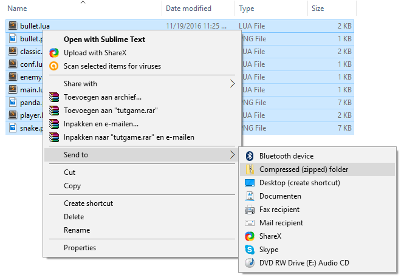
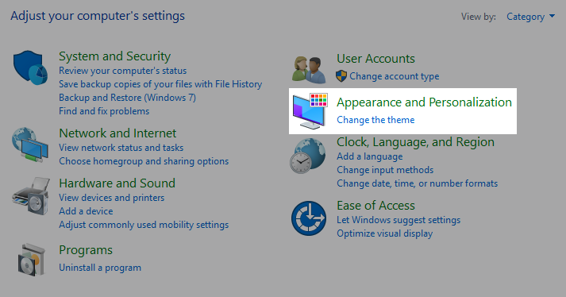
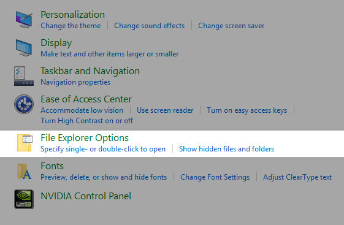
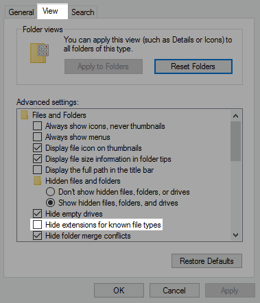

#Chapter 15 - Distributing your game
We use the code of the previous chapter
You made a game, and you want to share it with others. You could make them install LÖVE on their computer, but that is not necassary.
First, we need to change the title and icon. For that we will use a config file.
Create a new file called conf.lua, and put in the following code
function love.conf(t)
t.window.title = "Panda Shooter!"
t.window.icon = "panda.png"
endSave the file. Now when you run the game you'll see the game has the title "Panda Shooter!", and that the icon is the panda.
This is what the config file is for. LÖVE loads conf.lua before it starts the game and applies the configurations. For a full list of options check out the wiki.
Now that our game has the correct title and icon, let's turn it into an executable.
First we need to package our game in a zip file. Go to the folder of your game, select all the files. Now right click, go to Send to and click on Compressed (zipped) folder. The filename is not important, but we need to change the extension to .love (by default .zip).

If you can't see file extensions
Press Windows + pause/break. In the upper-left corner of the new opened window click on Control Panel. Now go to Appearance and Personalization.

Click on File Explorer options.

A new window opens. Click on the tab View. In Advanced options, make sure that Hide extension for known filetypes is unchecked.

Download this zip file, and unzip all the files in a folder.
Now move your .love file on top of create_exe.bat. This creates a .exe file in the game folder.
Package all the files inside the game folder in a zip file. This is the file that you will want to share with people. They have to extract all the files in a folder and open the .exe file.
Now you need to find a place to share your game. Check out itch.io.
With conf.lua you can configure things about your game like title and icon.
Select all the files in the folder of your game, put them in a zip. Change the file's extension from .zip to .love. Download this zip file, and unzip all the files in a folder. Move your .love on top of create_exe.bat. Select all the files in the folder game and put them in a zip. People will have to unzip all the files in a folder and open the .exe to play your game.